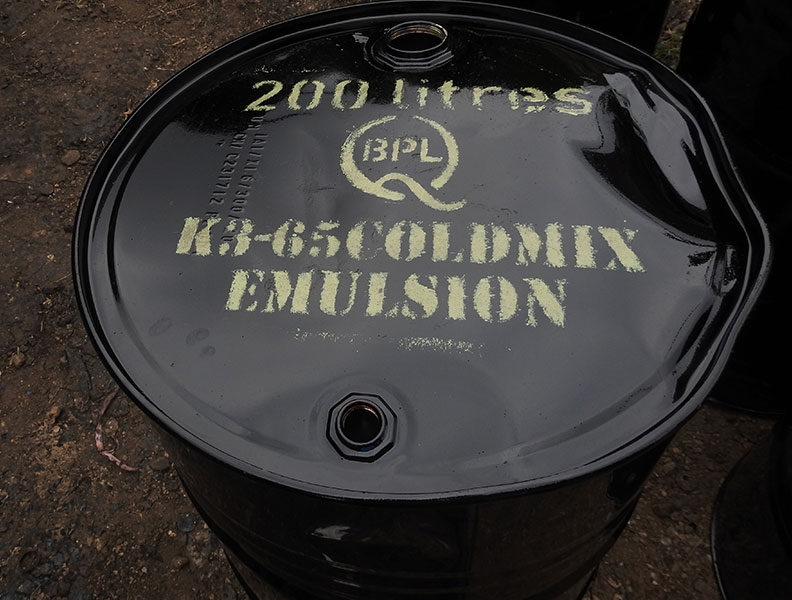
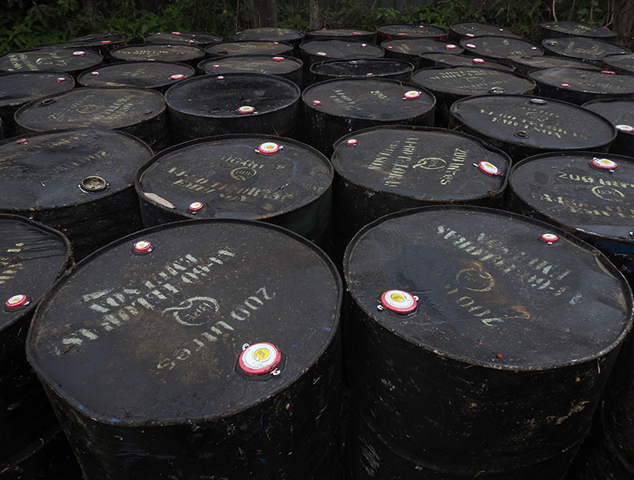
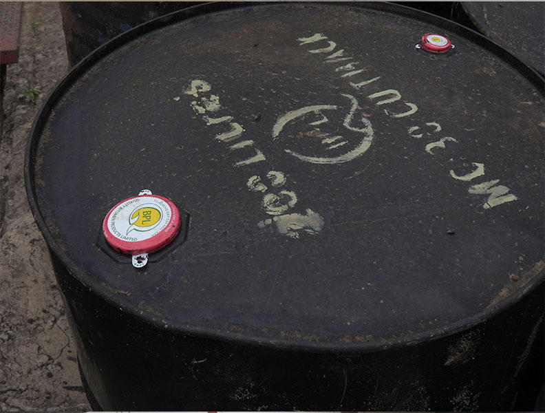
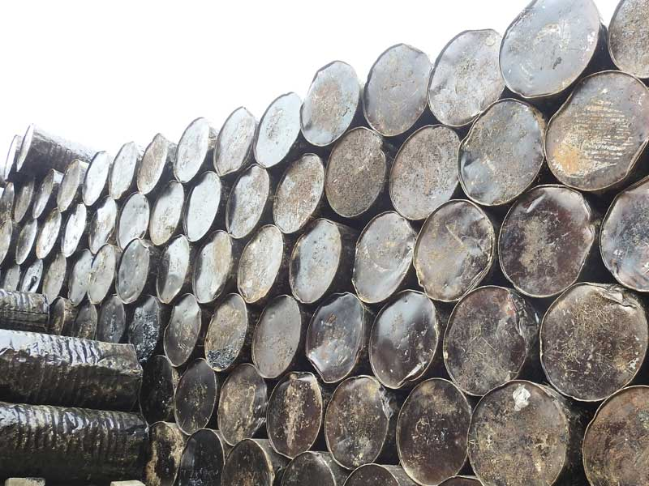

Cationic Emulsions
Road Grade Cationic Emulsions
Rapid, Medium & Slow Curing Bitumen Deposition Properties
- K1-40(40% Binder Content)
- K1-60(60% Binder Content)
- K1-70(70% Binder Content)
- K3-65(65% Binder Content)
Packaged in Bulk or in 200 Litre Reconditioned Steel Drums.

Anionic Emulsions
Road Grade Anionic Emulsions
Rapid, Medium and Slow Curing Spray Emulsions
- A1-55(55% Bitumen Content)
- A3-60(60% Bitumen Content)
- A4-60(60% Bitumen Content)
Packaged in Bulk or in 200 Litre Reconditioned Steel Drums.

Bitumen Cutbacks
Road Grade Bitumen Cutbacks
Rapid, Medium and Slow Curing Spray Primer
- MC-30 Cutback
- MC-70 Cutback
- MC-3000 Cutback
- RC-30 Cutback
- RC-70 Cutback
Packaged in Bulk or in 200 Litre Reconditioned Steel Drums.

Straight Run Bitumen
Road Grade Straight Run Bitumen Viscosity Grade Bitumen
- Penetration Grade Bitumen 80/100
- Penetration Grade Bitumen 60/70
VG 10, VG 20
VG 30, VG 40
Packaged in Bulk or in 200 Litre Reconditioned Steel Drums.
